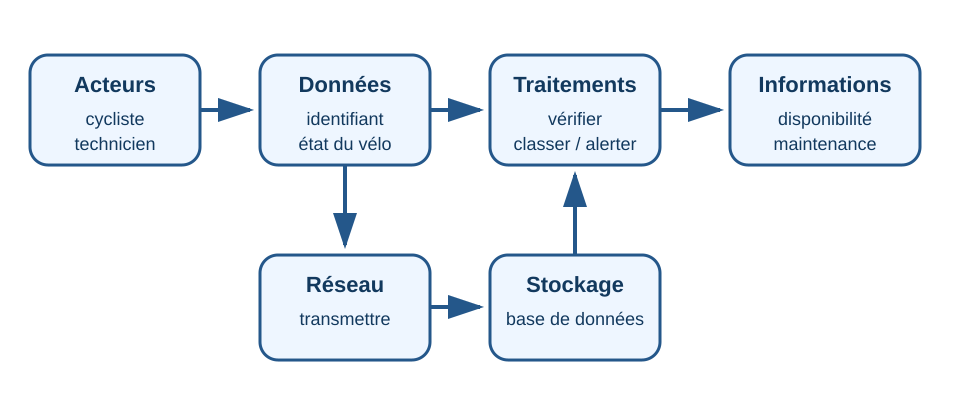
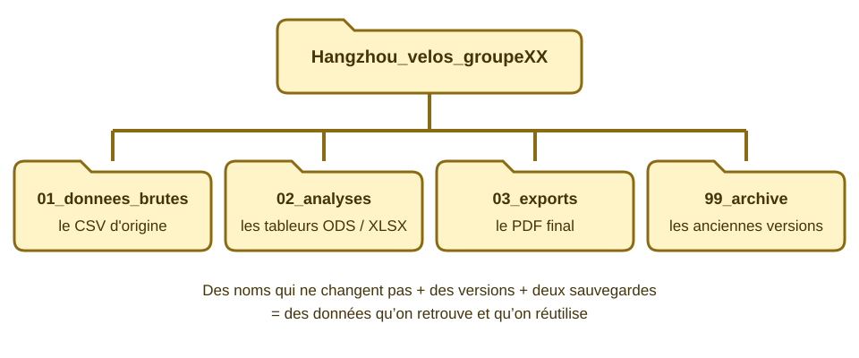

🗂️ Organiser les données d’un service de vélos partagés
Mission : comprendre le système d’information d’un service fictif de vélos à Hangzhou, organiser ses fichiers et exploiter ses données pour préparer une décision.
🇨🇳 Situation déclenchante — Hangzhou 杭州, Hángzhōu
Une équipe scolaire fictive prépare un service de vélos partagés pour relier plusieurs établissements. Elle reçoit des fichiers mal nommés, des dossiers mélangés et un tableau de données difficile à exploiter. Les informations utiles existent, mais personne ne sait rapidement où les retrouver ni comment les comparer.
Les données et l’organisation proposées dans cette séquence sont entièrement simulées. Elles servent uniquement à apprendre.
Problématique
Comment un système d’information permet-il de collecter, organiser, stocker, retrouver et exploiter des données afin de rendre un service fiable ?
🎯 Compétences de technologie
- 5e_C1.3 : décrire le rôle des systèmes d’information dans le partage d’information.
- 5e_C1.4 : recenser des données, les identifier, les classer, les représenter, les stocker et les retrouver dans une arborescence.

📌 CRCN observable, tracé et justifié
| Compétence exacte | Niveau visé | Repère pour enseigner — verbatim | Action observable | Trace produite |
|---|---|---|---|---|
| CRCN 1.2 — Gérer des données | 2 | « Sauvegarder des fichiers dans l’ordinateur utilisé et dans un espace de stockage partagé et sécurisé, afin de pouvoir les réutiliser. » | Créer une arborescence imposée, renommer et déplacer les six fichiers du paquet de départ fourni, puis enregistrer une copie dans deux espaces distincts. | Capture de l’arborescence et archive ZIP du dossier de groupe. |
| CRCN 1.3 — Traiter des données | 2 | « Insérer, saisir et trier des données dans un tableur pour les exploiter. » | Importer le CSV, ajouter une colonne, saisir un statut, trier et filtrer les lignes. | Fichier ODS/XLSX transformé et export PDF du tableau filtré. |
Règle : utiliser un ordinateur n’est pas une compétence. Les compétences sont validées uniquement par les transformations observables et les fichiers remis.
🧭 Séance 1 — Comprendre un système d’information
Activité 1 — Qui produit, transporte, traite et utilise l’information ? ⏱ ~50 min
D'abord, qu'est-ce qu'une donnée ? La carte mentale d'un autre projet
Pour décrire le système d'information des vélos, il faut savoir reconnaître une donnée : une information que l'on peut enregistrer dans un fichier. Entraîne-toi sur un autre projet, le lampadaire intelligent d'une classe de 5e : recense ses données, puis range-les dans une carte mentale, qu'on appelle aussi carte heuristique. Un exercice, environ un quart d'heure ; il se vérifie tout seul et a sa correction complète.
📘 Le cours — ce qu'il faut savoir
Ce qu'est une carte mentale
- Un schéma qui part d'une idée centrale, écrite au milieu de la feuille : le sujet.
- Des branches partent du centre. Chacune porte un mot qui nomme une famille d'idées.
- Au bout des branches, les feuilles : une idée ou une donnée chacune, en quelques mots.
- On l'appelle aussi carte heuristique, et mind map en anglais.
La construire en cinq gestes
- Écrire le sujet au centre.
- Recenser : faire la liste de tout ce que l'on a, sans trier.
- Chercher les familles : une branche par famille, avec un mot dessus.
- Ranger chaque idée sur sa branche, en mots-clés.
- Relire : ce qui ne va sur aucune branche est hors sujet, on l'enlève — pas de branche « Divers ».
Les données d'un projet
- Une donnée est une information que l'on peut enregistrer dans un fichier : une image, des nombres, un texte, un programme, un dessin scanné.
- Un objet (la LED, la tablette, la carte programmable) n'est pas une donnée : on enregistre sa photo, pas l'objet.
De la carte aux dossiers
| Sur la carte mentale | Sur l'ordinateur | Exemple |
|---|---|---|
| l'idée centrale | le dossier du projet | Lampadaire |
| une branche | un dossier rangé dedans | Mesures |
| une feuille | un fichier | releves_mardi.csv |
- En classe, tout commence par Documents, puis le dossier de la classe : Documents › 5e › Lampadaire › Mesures › releves_mardi.csv. Cette suite s'appelle le chemin du fichier.
- L'extension, après le point, dit le format : .jpg une image, .csv un tableau de valeurs, .odt un texte. Le nom dit de quoi parle le fichier : sans espace ni accent, avec un numéro de séance ou de version.
Ce qu'elle ne montre pas
- Ni ce qui circule dans un objet, ni l'ordre de ce qu'il fait : elle range des idées, elle ne décrit pas un fonctionnement.
Le cours complet, avec les schémas et les mots : la synthèse.
Exercice 1 — Ranger les données du projet dans une carte mentale
📖 Les mots de cet exercice
- carte mentale
- un schéma qui part d'une idée centrale et range les idées sur des branches. On dit aussi carte heuristique, et mind map en anglais.
- idée centrale
- le sujet de la carte, écrit au milieu (ici, le projet lampadaire).
- branche
- un trait qui part du centre et porte un mot : il regroupe les idées d'une même famille.
- feuille
- une idée ou une donnée, au bout d'une branche, écrite en quelques mots.
- donnée
- une information que l'on peut enregistrer dans un fichier : une image, des nombres, un texte, un programme…
- recenser
- faire la liste complète de ce que l'on a, sans rien oublier.
- lux
- l'unité de la luminosité : environ 100 000 lux en plein soleil, moins de 10 lux la nuit dans une rue sombre.
- LED
- une petite lampe qui consomme peu d'électricité (de l'anglais light-emitting diode, diode électroluminescente).
La classe de 5e construit un lampadaire intelligent pour une rue de Sainte-Luce : la nuit tombe, le capteur mesure la lumière, et la LED s'allume toute seule. Après trois séances, l'équipe a beaucoup de choses sur sa table et sur sa tablette. Pour ne rien perdre, elle les range dans une carte mentale : au centre, le projet ; sur chaque branche, une famille de données.
Une donnée, c'est une information que l'on peut enregistrer dans un fichier : une photo, des nombres, un texte, un programme. D'abord, recense les données : coche ce qui en est une. Puis range-les dans la carte mentale : chaque branche a déjà une feuille d'exemple et une feuille vide, en pointillés. Choisis ce qui va dans chaque feuille vide ; ton choix s'écrit dans la carte. Une étiquette de la liste n'a sa place dans aucune branche.
✅ Tu as réussi si… tu coches les cinq données et seulement elles, et chaque feuille vide reçoit la donnée de sa famille.
💡 Aide 1 — pour démarrer
Commence par la question « peut-on l'enregistrer dans un fichier ? ». Puis, pour chaque donnée, demande-toi de quelle nature elle est : une image, des nombres, une instruction, un texte, un dessin. Chaque nature a sa branche.
💡 Aide 2 — le raisonnement pas à pas
« La lampe LED » → on la touche → un objet, pas une donnée → aucune branche.
« 820, 640, 310 et 95 lux » → des nombres avec leur unité → Mesures.
« si moins de 200 lux, allumer la LED » → une instruction que la carte exécute → Programmes.
« ce qu'on a fait et conclu » → un texte qui raconte → Comptes rendus.
« dessiné à main levée » → un dessin → Croquis ; « vu de près », pris avec la tablette → Photos.
🪜 Version étayée : des débuts de phrase pour t'aider
- Dans cette nouvelle situation, je pose la même question que dans l'aide 2 : …
- Ma réponse : … parce que …
🔍 Correction de l'exercice jumeau
Trois données : la vidéo (branche Vidéos ou Images), le tableau des temps (branche Mesures), le plan d'exposé (branche Textes). Le vélo-cargo lui-même est un objet : il n'a pas de feuille, seulement sa photo pourrait en avoir une.🔍 La correction complète, et pourquoi
📌 À retenir : une carte mentale part d'une idée centrale ; chaque branche porte le nom d'une famille, et chaque feuille une idée ou une donnée, en quelques mots.
⚠ Le piège classique : ranger un objet (la LED, la tablette) comme une donnée : dans un fichier, on enregistre sa photo, pas l'objet.
🗺️ Ces exercices viennent de l'atelier de 5e « La carte mentale » : ce que tu fais ici s'y retrouve, avec un second exercice qui passe de la carte mentale aux dossiers de l'ordinateur, et le QCM de l'atelier.
Consigne : observe le schéma puis classe les éléments suivants : cycliste, QR code, application, réseau, serveur, base de données, technicien, tableau de bord.
Production attendue : d'abord la carte mentale des données du projet lampadaire (l'exercice ci-dessus), puis un tableau à quatre colonnes : acteur / donnée produite / traitement / information utilisée.
🆘 Aide graduée
Commence par repérer les personnes. Cherche ensuite ce qui est mesuré ou saisi, puis ce qui est calculé, enfin qui utilise le résultat.
✅ Correction exhaustive
Le cycliste produit une demande de location ; le QR code fournit l’identifiant du vélo ; l’application transmet la demande ; le réseau transporte les données ; le serveur vérifie les droits et la disponibilité ; la base stocke les locations ; le technicien consulte les alertes ; le tableau de bord présente les vélos disponibles ou à maintenir.
Erreur fréquente : confondre le système d’information avec l’ordinateur seul. Le système comprend les personnes, les règles, les données, les logiciels, les matériels et les réseaux.
🗃️ Séance 2 — Classer, nommer et retrouver des fichiers

Activité 2 — Reconstruire une arborescence réutilisable ⏱ ~40 min
Consigne : crée le dossier Hangzhou_velos_groupeXX, puis les sous-dossiers 01_donnees_brutes, 02_analyses, 03_exports et 99_archive. Renomme et range les six fichiers du paquet de départ (dossier paquet_depart/, et la fiche du professeur). Ils arrivent volontairement mal nommés : espaces, accents, majuscules, aucune date. C'est ce désordre qui donne son sens à la règle de nommage.
Règle de nommage : AAAA-MM-JJ_type_contenu_version.ext.
Production attendue : capture de l’arborescence ouverte et archive ZIP du dossier complet.
🆘 Aide graduée
Les fichiers reçus restent dans « données brutes ». Les fichiers modifiés vont dans « analyses ». Les documents destinés à être diffusés vont dans « exports ». Les anciennes versions vont dans « archive ».
✅ Correction exhaustive
- CSV original → `01_donnees_brutes` ;
- tableur transformé → `02_analyses` ;
- PDF de synthèse → `03_exports` ;
- ancienne version → `99_archive`.
La copie locale et la copie partagée doivent porter le même nom de version.
Erreur fréquente : créer des dossiers « divers », « nouveau » ou « à voir », qui ne permettent pas de retrouver durablement les ressources.
📊 Séance 3 — Trier et filtrer pour décider
Activité 3 — Exploiter un jeu de données simulées ⏱ ~40 min
- Ouvre le CSV dans un tableur avec le séparateur point-virgule.
- Enregistre une copie dans
02_analyses. - Ajoute la colonne
statut_maintenance. - Saisis
prioritairelorsque le nombre d’incidents est supérieur ou égal à 3 ou lorsque l’autonomie est inférieure à 35 %. - Trie les vélos par nombre d’incidents décroissant.
- Filtre pour afficher uniquement les lignes prioritaires.
- Exporte le résultat au format PDF dans
03_exports.
Production attendue : tableur transformé, PDF filtré et conclusion de cinq lignes.
🆘 Aide graduée
Un tri change l’ordre des lignes. Un filtre masque temporairement les lignes qui ne répondent pas à un critère. Il ne faut pas supprimer les données originales.
✅ Correction exhaustive
Les vélos V-104, V-105, V-108 et V-112 doivent être marqués prioritaires dans le jeu fourni. Le tri place d’abord le vélo ayant le plus d’incidents. Le PDF final ne doit conserver que les lignes prioritaires.
Erreur fréquente : modifier le CSV original au lieu de travailler sur une copie, ou supprimer les lignes non prioritaires au lieu de les filtrer.
🌍 Transfert territorial — de Hangzhou à la Martinique
La même organisation fonctionnerait-elle pour un service scolaire à Fort-de-France ou Sainte-Luce ? Identifie au moins trois adaptations : qualité du réseau, humidité et corrosion, relief, fréquence de maintenance, distance entre les sites ou disponibilité des pièces.
Ces défis ne sont pas notés. Chacun a sa correction, repliée : cherche d'abord, ouvre ensuite — mais ouvre.
🎁 Bonus (facultatif — hors parcours obligatoire)
- Imagine une règle permettant de supprimer automatiquement les doublons sans perdre de données importantes.
Voir la correction
Une règle qui marche : deux fiches sont un doublon si elles partagent la même valeur sur un champ qui ne peut pas se répéter — un numéro d'élève, une adresse de courriel. On garde alors la fiche la plus récemment modifiée, et on recopie dedans les champs remplis dans l'autre et vides dans celle-là. Rien n'est perdu.
Ce qu'il fallait repérer : « même nom, même prénom » n'est pas une règle sûre — deux élèves peuvent s'appeler pareil. Une règle de doublon a besoin d'un champ unique par nature. Et supprimer sans fusionner d'abord, c'est perdre l'information que seule la fiche supprimée contenait : l'erreur classique.
- Propose une arborescence pour un autre service : bibliothèque, cantine, jardin connecté ou club d’échecs.
Voir la correction
Il n'y a pas une seule bonne réponse, mais une bonne forme. Exemple pour la cantine :
Cantine / 2026-2027 / Menus / Semaine-38etCantine / 2026-2027 / Inscriptions / 6e. Trois qualités : on range du plus général au plus particulier, chaque niveau répond à une seule question (quand ? quoi ? qui ?), et un fichier n'a qu'un seul chemin possible.Le test qui départage : demande à quelqu'un d'autre où il rangerait un fichier donné. S'il hésite entre deux dossiers, ton arborescence pose deux questions à la fois — c'est le défaut le plus fréquent, et il se voit tout de suite quand on cherche.
- Compare les risques d’une base centralisée et d’une organisation distribuée entre plusieurs établissements.
Voir la correction
Centralisé : tout au même endroit. C'est simple à tenir à jour et à sauvegarder, mais une panne arrête tout le monde, et une fuite expose toutes les données d'un coup.
Distribué : chaque établissement garde les siennes. Une panne ne touche qu'un établissement et une fuite est limitée — mais les données divergent, et personne ne peut plus dire laquelle est la bonne version.
Ce qu'il fallait repérer : ce n'est pas « lequel est le mieux », c'est ce qu'on accepte de risquer. On échange de la simplicité contre de la robustesse. La question à se poser devant n'importe quel système : que se passe-t-il si ça tombe en panne ?
✅ Bilan
Un système d’information associe des acteurs, des règles, des données, des matériels, des logiciels et des réseaux. Il permet de collecter, traiter, stocker, partager et retrouver l’information. Une arborescence, des noms de fichiers stables, des sauvegardes et des traitements de données rendent le service plus fiable.
🪞 Mon bilan personnel
Personne ne lit ces trois réponses à part toi. Elles ne sont pas notées : elles servent à savoir ce que tu sais maintenant, et ce que tu iras rechercher.
🧠 Prêt·e à t’entraîner ?
Le QCM comporte 30 questions, dont des questions illustrées sur le système d’information, l’arborescence et le traitement des données.
💾 Sauvegarde locale des réponses textuelles
Les zones de réponse sont enregistrées uniquement dans ce navigateur.